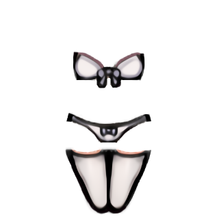
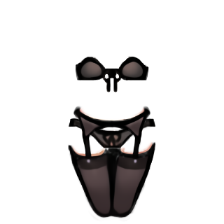
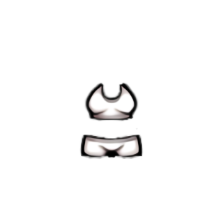
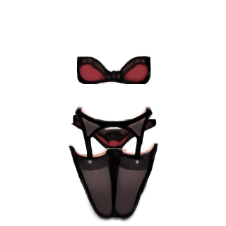
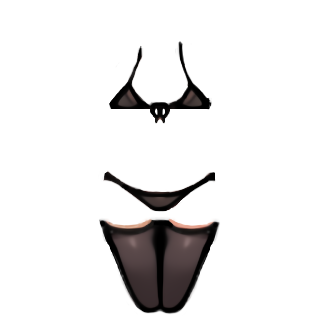
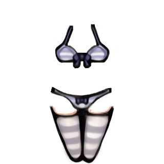
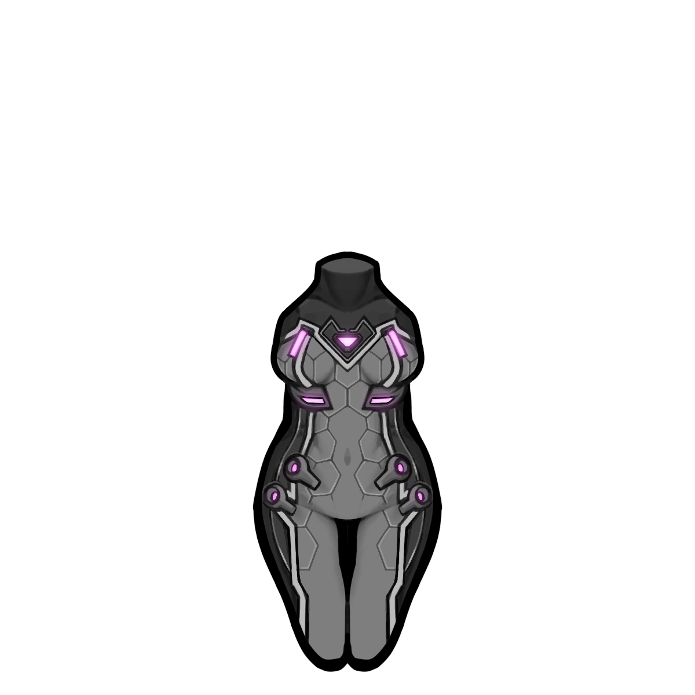

魅狐白色内衣Kurin_Underwear

Kurin/Apparel/Underwear/White_Underwear/Texture
—
素色内衣，染成了白色。
本片：魅狐白色内衣 魅狐黑色内衣 魅狐古朴内衣 魅狐红色内衣 魅狐修身内衣 魅狐白色条纹 魅狐条纹的胸 魅狐内衣 “水狐”紧身
Kurin_Underwear
Kurin/Apparel/Underwear/White_Underwear/Texture
—
素色内衣，染成了白色。
Kurin_Underwear_Black
Kurin/Apparel/Underwear/Black_Underwear/Texture
—
素色内衣，染成了黑色。
Kurin_Underwear_Prude
Kurin/Apparel/Underwear/Prude_Underwear/Texture
—
内衣既轻又舒服，魅狐们甚至经常忘记她们还穿着一件内衣。
Kurin_Underwear_Red
Kurin/Apparel/Underwear/Red_Underwear/Texture
—
素色内衣，染成了红色。
Kurin_Underwear_Slim
Kurin/Apparel/Underwear/Slim_Underwear/Texture
—
魅狐们用的修身内衣。遮挡的地方不多。
Kurin_Underwear_Striped
Kurin/Apparel/Underwear/Striped_Underwear/Texture
—
可爱的条纹内裤。被染成了白色。
Kurin_Underwear_Striped_Stuffed
Kurin/Apparel/Underwear/Striped_Underwear/Texture
—
可爱的条纹文胸。适合调整成其他款色。
Kurin_Underwear_Stuffed
Kurin/Apparel/Underwear/White_Underwear/Texture
—
与所用材料的颜色相匹配的素色内衣。
Kurin_Waterfox_Armor
Kurin/Apparel/OnSkin/Waterfox_armor/Texture
护甲 0.2/0.1/4 · 科研 Kurin_ApparelT4
旧魅狐共和国的复制品紧身衣。水狐后勤公司致力于为魅狐军队提供物资。这款紧身衣在提高工作效率的同时提供了基本的保护。